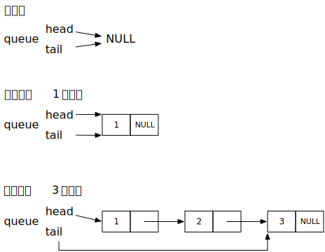
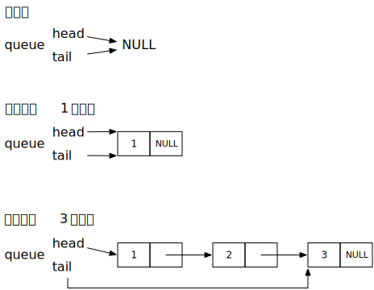

队列 (Queue)
队列是一种先进先出 (FIFO, First In First Out) 的数据结构
如果用链表来类比的话，就是只允许在链表头插入，在链表尾删除。
或反之链表头删除，链表尾插入
实现
参考：https://developer.gnome.org/glib/2.42/
实现的底层用的是链表的实现
只是在这之上封装了 head, tail 节点，方便队列操作而已

队列是一种先进先出 (FIFO, First In First Out) 的数据结构
如果用链表来类比的话，就是只允许在链表头插入，在链表尾删除。
或反之链表头删除，链表尾插入
参考：https://developer.gnome.org/glib/2.42/
实现的底层用的是链表的实现
只是在这之上封装了 head, tail 节点，方便队列操作而已
